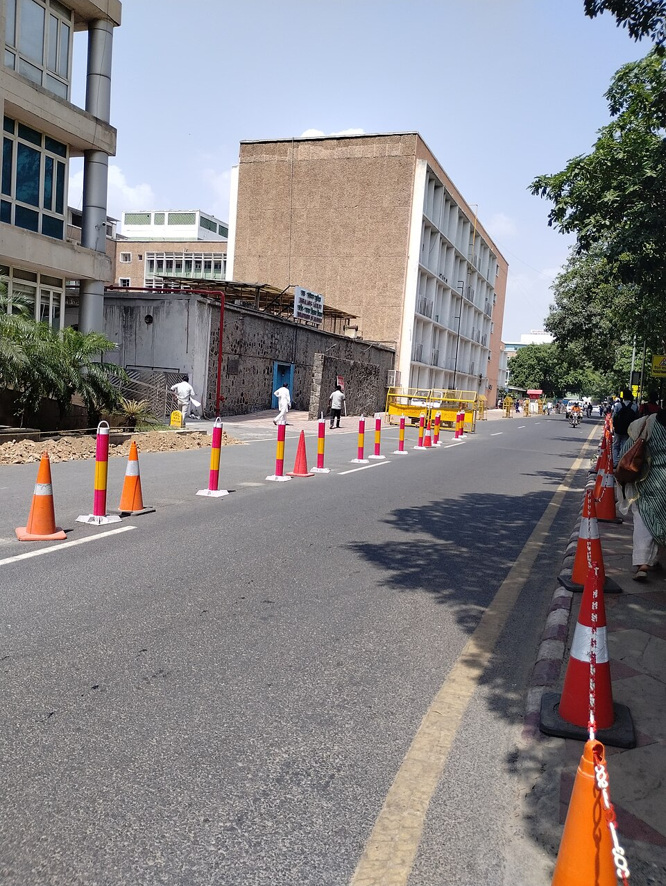
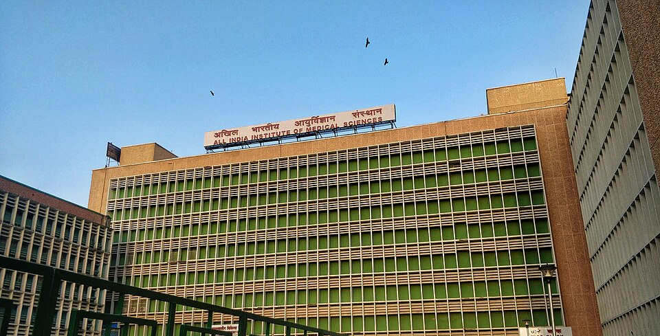

दिल्ली में भाजपा की दो दिवसीय संगठनात्मक कार्यशाला शुरू, चुनावों की रणनीति पर मंथन
दिल्ली के पूसा में भाजपा की दो दिवसीय संगठनात्मक कार्यशाला शुरू हो गई है। प्रधानमंत्री नरेंद्र मोदी और पार्टी अध्यक्ष नितिन नवीन समेत कई वरिष्ठ नेता इसमें शामिल हो रहे हैं।

आगामी विधानसभा चुनावों की तैयारियों और संगठन को मजबूत करने के उद्देश्य से भारतीय जनता पार्टी की दो दिवसीय संगठनात्मक कार्यशाला शुक्रवार को दिल्ली के पूसा में शुरू हुई। बैठक में प्रधानमंत्री नरेंद्र मोदी, पार्टी के राष्ट्रीय पदाधिकारियों, प्रदेश अध्यक्षों और संगठन प्रभारियों समेत कई वरिष्ठ नेता हिस्सा ले रहे हैं। पांच सत्रों में आयोजित इस कार्यशाला में 2027 के चुनावों की रणनीति और आगामी कार्यक्रमों की रूपरेखा पर चर्चा की जा रही है।
उद्घाटन सत्र की अध्यक्षता पार्टी के राष्ट्रीय अध्यक्ष नितिन नवीन और राष्ट्रीय महासचिव (संगठन) बी.एल. संतोष कर रहे हैं। इस दौरान संगठन के कामकाज की समीक्षा और पार्टी की गतिविधियों को आगे बढ़ाने को लेकर विचार-विमर्श हो रहा है। बैठक के दौरान पार्टी अध्यक्ष का संबोधन भी प्रस्तावित है।
इससे पहले प्रधानमंत्री मोदी ने 22 अगस्त को नई दिल्ली स्थित मुख्यालय में पार्टी की नई टीम के साथ बैठक की थी। हाल ही में घोषित 65 सदस्यीय राष्ट्रीय टीम के गठन के बाद यह इस तरह की दूसरी बड़ी संगठनात्मक बैठक है, जिसमें पार्टी की जमीनी पकड़ मजबूत करने पर जोर दिया जा रहा है।
और पढ़ें

राष्ट्रीयदिल्ली एम्स का बर्न्स ब्लॉक बना 'रोटरी सेंटर ऑफ एक्सीलेंस'
दिल्ली एम्स के बर्न्स एंड प्लास्टिक सर्जरी ब्लॉक को रोटरी इंटरनेशनल डिस्ट्रिक्ट 3011 ने 'रोटरी सेंटर ऑफ एक्सीलेंस इन बर्न्स एंड रिकंस्ट्रक्टिव सर्जरी' घोषित किया है, जिससे गंभीर रूप से झुलसे मरीजों के इलाज में मदद मिलेगी।

राष्ट्रीयदिल्ली एम्स का बर्न्स ब्लॉक बना रोटरी सेंटर ऑफ एक्सीलेंस
दिल्ली एम्स के बर्न्स एंड प्लास्टिक सर्जरी ब्लॉक को रोटरी इंटरनेशनल डिस्ट्रिक्ट 3011 ने सेंटर ऑफ एक्सीलेंस घोषित किया है। इससे गंभीर रूप से झुलसे मरीजों के इलाज और रिकंस्ट्रक्टिव सर्जरी की सुविधाएं बेहतर होंगी।
राष्ट्रीयउत्तराखंड के पौड़ी गढ़वाल सड़क हादसे पर पीएम मोदी ने जताया दुख, मुआवजे का ऐलान
उत्तराखंड के पौड़ी गढ़वाल जिले में हुए सड़क हादसे में जान गंवाने वालों के परिजनों को प्रधानमंत्री राष्ट्रीय राहत कोष से ₹2 लाख की आर्थिक सहायता देने की घोषणा की गई है।
 राष्ट्रीय
राष्ट्रीयपरिसीमन के बाद लोकसभा सीटें बढ़कर 816 होने का प्रस्ताव, यूपी में 120 सीटें संभव
केंद्रीय मंत्री अर्जुन राम मेघवाल ने परिसीमन के बाद का संभावित लोकसभा नक्शा साझा किया है, जिसके तहत देश में कुल सीटों की संख्या 543 से बढ़कर 816 होने का प्रस्ताव है। उत्तर प्रदेश में सीटें 80 से बढ़कर 120 हो सकती हैं।